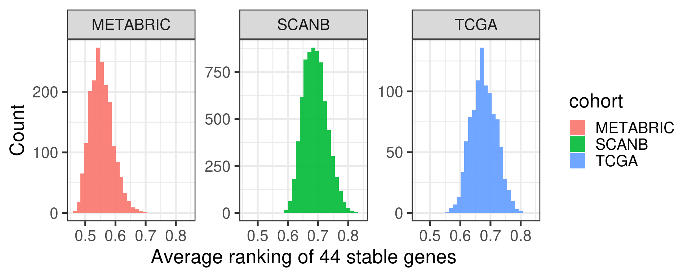
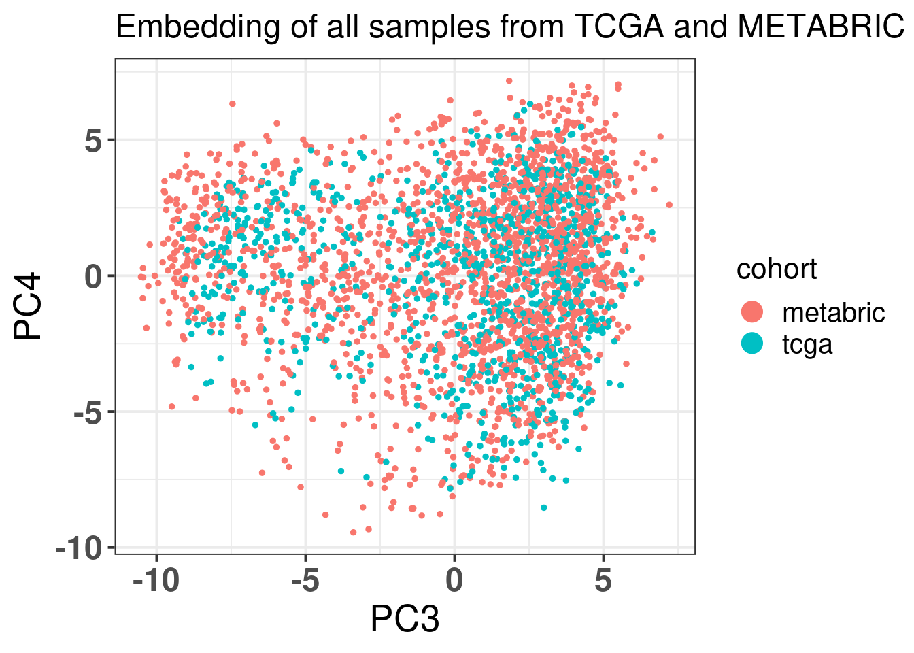
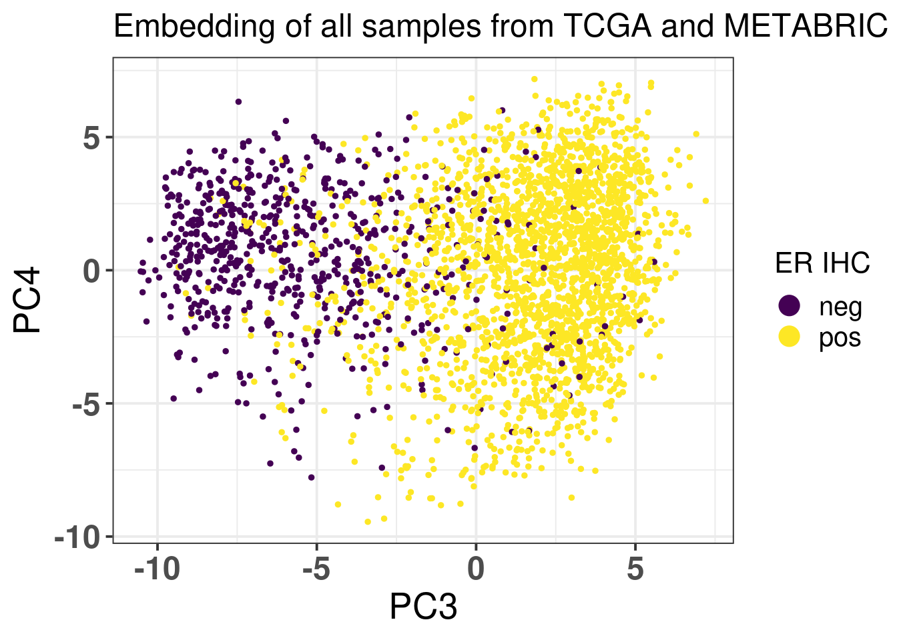
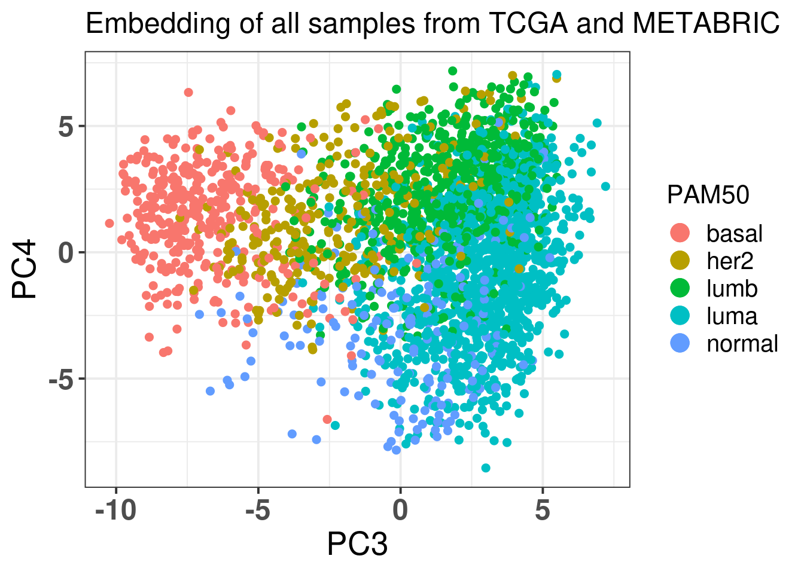

2A new framework for personalized medicine: integrating
In the next few chapters we will show a new framework for personalized medicine. This is motivated by the fact that we know already some patients are more sensitive to endocrine therapy than others, but we don’t know what are possible treatments. Moreover, it is very difficult to compare, molecularly, patients among themselves.
The PREDICT tool (Wishart et al. 2010) provides a tool for practitioners to calculate survival risks among patients with similar clinical characteristics. This is very important as it shows how to combine data from previous patients to guide further treatments of new patients. However, no additional information is given, such as alternative pathways to target or what might be different from other patients.
Other tools that help in the clinics are the molecular signatures developed by companies (Wallden et al. 2015; Vijver et al. 2002; Paik et al. 2004). These signatures are intended to be used with ER+ BC patients and depending on the tool, on node negative, post-menopausal women. Based on the set of genes, a risk score is assigned or each patient. The score means if a patient would benefit from additional chemotherapy besides the usual endocrine therapy received for either 5 or 10 years. They also lack the additional information of what are possible pathways involved and alternative treatments beside chemotherapy.
There are a few challenges to overcome pathway analysis for patients individually and how to compare patients molecularly. There is no tool that allows to integrate patients in a continuous way. Usually integration is a one step procedure and cannot be updated. The usual tools are (Risso et al. 2014; Zhang, Parmigiani, and Johnson 2020; Fei et al. 2018) and they do not provide batch effect removal for new samples. The only way is to re-run the procedure together with the new sample. The problem of doing this is usually you don’t have enough samples to estimate batch effects across groups and therefore correct it.
This chapter show how to perform PCA projection using samples from different datasets and how new samples can be introduced without retraining of the PCA. We first introduce the notion of a new normalization that depends on housekeeping genes. After using this new normalization, we proceed with PCA on a subset of two cohorts using the 1000 most variable genes. We then validate the integration with new samples from a completely different cohort.
* The library is already synchronized with the lockfile.
2.1 Transcriptomics and qPCR normalization
In this first step we introduce a new normalization. The rational is that we need a normalization procedure that is applied in a single sample only, similar to logCPM, but that can be applied to microarray too. In this case, given a set of samples, we start by ranking the genes in each sample. We then normalize the ranking to be between 0 and 1, i.e., we divide by the total number of genes available in that sample. Then, given a list of 50 stable genes across cancer (Bhuva, Cursons, and Davis 2020), we calculate the average ranking of these genes in the sample and then for each gene in the sample we divide by this average.
2.1.1 Selecting stable genes
The first step is to check what number of these 50 genes are available on TCGA and METABRIC, as these datasets will be used for training the PCA projection. The total number of available genes is 44. Table 2.1 shows the name of the genes available in TCGA and METABRIC.
Now we select the 1000 most variable genes across METABRIC and TCGA. Reducing the number of genes used when calculating the PCA helps in the future. Several publicly available datasets don’t have many genes available, therefore reducing the number of genes increases the chances of using this approach in other datasets.
Moreover, the use of a large number of genes is used because if some of them are not available. We show in later sections that if some number of stable genes are missing, it will not affect the normalization.
Figure 2.1: (Table 2.1) Available stable genes in both TCGA and METABRIC cohorts.
2.1.2 Calculating the normalization
We will create subset of the summarised experiment objects to save these information. Moreover, since a summarized experiment object is being used, we can save the new normalization in the assays and the average ranking scores of the housekeeping genes in the column data colData. This way it is very easy to retrieve the information for the patients.
Figure 2.2: Comparison of coefficient of variation and standard deviation scores.
They are highly correlated values, so we stick to the coefficient of variation as it makes more sense in this kind of analysis.
Table 2.3 shows the top 1000 genes along with their standard deviation. The stable genes are also added to the list.
Figure 2.3: (Table 2.3) Standard deviation of each gene in each condition and pooled standard deviation.
Overall we can see that housekeeping genes have very low standard deviation across cohorts, which is good.
Total number of stable genes: 44
Total number of genes: 1044
Number of samples: 1005
Total number of stable genes: 44
Total number of genes: 1044
Number of samples: 8475
Total number of stable genes: 44
Total number of genes: 1044
Number of samples: 1868
Figure 2.4 shows a histogram with the distribution of the average ranking of the housekeeping genes for each sample in each cohort.

Figure 2.4: Distribution of the average ranking of the housekeeping genes defined previously for each cohort separately.
The average ranking are somewhat similar. For the two experiments where there are RNA-seq samples, the distribution is the same. For METABRIC, a microarray experiment, the distribution is shifted a bit below.
Figure 2.5 shows histograms of gene expression from some important genes in breast cancer.
Figure 2.5: Distribution of the gene expression levels of ESR1 and TFF1 in each one of the cohorts
ESR1 and TFF1 expressions are divided across ER status, as expected. The proliferation marker CCND1 is also highly expressed in all conditions.
2.1.3 Checking robustness with respect of number of houesekeeping genes available
When calculating the normalized data, a total of 44 housekeeping genes were used. Sometimes not all of these genes are available, therefore we will calculate the normalization using random subsets of 44 housekeeping genes with different random sizes. The sets will have a minimum of 20 genes and maximum of 44. The sampling of the set size is obtained by using a uniform distribution. We focus just on TCGA for simplicity. The correlation used in this case was the Pearson correlation.
Figure 2.6: Correlation distribution for different subsets of housekeeping genes (HKGs). Each different subset has a different number of HKGs.
Figure 2.6 shows the different distributions given the subsets of housekeeping genes. All the correlation coefficients are close to 1. This means that if a subset of housekeeping genes are missing it is fine, as the others will compensate.
2.2 Integrating TCGA and METABRIC using PCA
The next step is creating the framework where we can integrate any patient sample and compare each other, at least spatially. The approach is similar to some sort of unsupervised learning, where no labels or groups are specified, which is something common in algorithms for batch removal. By using PCA in some subset of TCGA and METABRIC, we should learn the idiosyncrasies of the RNA-seq and microarray technologies as well as batch effects general to datasets. Since these two cohorts are big ones, we assume that if there are common batch effects, they are represented on them.
The practical steps are: first subselect 1000 samples in total from METABRIC and TCGA. Train PCA using these 1000 samples. Validate the results by projecting the other samples. In the next section we show how robust the approach is when selecting the samples. In the next chapters we validate the projection in unseen cohorts.
Integrating as laid out here only uses molecular data, therefore patients might be close to each other but they might have very different clinical features. This should always be kept in mind.
The table below shows the molecular characteristics of the patients selected for the PCA training.
cohort
basal
her2
lumb
luma
normal
claudin-low
metabric
73
74
163
224
46
68
tcga
70
28
61
177
16
0
Figure 2.7 shows the embedding of the two datasets together of the 1000 samples used for training. We select several PCs of interest to show how the embedding works.
Figure 2.7: PCA projections colored by different factors and organized by different components. (A) Plot of the first two components colored by cohort. (B) Plot of the first two components colored by ER status. (C) Plot of the second and third components colored by cohort. (D) Plot of the second and third components colored by ER status. (E) Plot of the second and third components colored by PAM50. (F) Plot of the second and third components colored by INTCLUST, only METABRIC has an assigned value for this variable, NAs are TCGA samples.
The first three components correspond to the batch effect. The third component explains the ER status and the two cohorts are well inter mingled. When plotting the third and fourth components and coloring by the molecular subtype, we see a clear distinction, recapitulating the biology.
The plot below shows how the loadings of the first component are really concentrated around zero, so there are not actually specific genes that are accounting for the batch effects we see in the first component. We show latter that the genes that are the most important are the ones with high loading, so the tail of the distributions. In this sense there are really no genes in the tail of the loadings for PC1.
Figure 2.8: Different loadings for the first 4 components.
Figure 2.9 shows all the samples from TCGA and cohort projected into the molecular landscape. The samples are mixing well, the only thing is that METABRIC is a bit offset to the left bottom.

Figure 2.9: Original PC3 and PC4 of all samples, including test and train samples, of TCGA and METABRIC.
Figure 2.10: Original PC3 and PC4 of all samples, including test and train samples, of TCGA and METABRIC.
In order to check if the integration made sense, it is possible to color by ER status, NPI for METABRIC samples and tumor/node stage for TCGA. To check ER signaling scores, the pathways Estrogen response early/late and \(SET_{ER/PR}\) are used to color the projection.
Figure 2.11: PC3 and PC4 of samples from TCGA and METABRIC colored by age.
Age seems to be well mixed. Figure 2.12 shows the PCA colored by ER status.

Figure 2.12: PC3 and PC4 of samples from TCGA and METABRIC colored by ER status.
It has a very good separation among the different patients. Figure 2.13 is the PCA embedding colored by NPI. Only METABRIC samples have this information.
Figure 2.13: PC3 and PC4 of samples from METABRIC only colored by NPI.
It looks good, ER+ BC patients have lower NPI, which makes sense. Figure 2.14 shows the biplot colored by tumor purity.
Figure 2.14: PC3 and PC4 of samples from METABRIC only colored by tumor purity.
The tumor purity is not a factor that is affecting the embedding as samples with low cellularity (< 40% of tumor cells) and high cellularity (> 70% of tumor cells) intermingle.
METABRIC has also inferred menopausal status for the patients, we use this information to check if there is any enrichment based on the patient menopausal status (Figure 2.15)
Figure 2.15: PC3 and PC4 of samples from METABRIC only colored by menopausal status.
We don’t see any difference between the two status. We proceed now with the analysis using clinical factors from TCGA.
Figure 2.16: PC3 and PC4 of samples from TCGA only colored by tumor stage and node stage.
For both tumor and node stage the samples seem to have mixed well, indicating the projection is not a function of the stages, as shown in Figure 2.16.
And finally Figure 2.17 below shows the color by PAM50 molecular subtype.

Figure 2.17: Corrected PC3 and PC4 of samples from TCGA and METABRIC colored by PAM50 molecular subtype.
The molecular subtypes are projected as expected, going from left to right there are the basal-like BC patients, going to HER2 and then they are split between luminal A and B. The normal like patients are in the top and closer to the luminal A, reflecting the biology.
The next figures show the ER signaling measures coloring the projections.
Figure 2.18: biplot of PC3 and PC4 of samples from TCGA and METABRIC colored by the SET ER/PR score.
Figure 2.19: biplot of PC3 and PC4 of samples from TCGA and METABRIC colored by the hallmark estrogen response early.
Figure 2.20: biplot of PC3 and PC4 of samples from TCGA and METABRIC colored by the hallmark estrogen response late
In all cases the mixing is relatively good. For \(SET_{ER/PR}\) you have a gradient going from the right to the left, showing again that patients on the far top right probably are those patients with better prognosis.
2.3 The integration is robust with respect of selection of samples
The embedding could be due to the patients selected and samples that are close to each other in one embedding would be far away from them in another embedding. Ten random sets of 1000 patients are sampled and the embedding is calculate. A total of 10 PCA embeddings are obtained.
Figure 2.21: Selecting a random set of 1000 patients an rerunning the pipeline to obtain other embeddings. Red color corresponds to the embedding using the new fitted PCA. Blue corresponds to the embedding of the original PCA. Each dot corresponds to a patient.
Figure 2.21 shows that the embedding is invariant for rotation, translation and reflection. Therefore, the subset of samples used for the embedding does not really matter.
2.4 Normalization is necessary to reduce batch effects in other components
Since PCA is removing batch effects from the datasets, one could argue it could also remove platform dependent normalization values and therefore one would need to look only at lower principal components. In this section we show that doing the normalization is necessary to get a good integration in the datasets.
The idea is similar as before, but instead of performing the qPCR-like normalization on the datasets, one would use the logFPKM values for TCGA and median intensity for microarray. The problem with this kind of approach also includes the fact that only other samples that went through this processing could be used in the pipeline.
Figure 2.22: PCA projections colored by different factors and organized by different components. (A) Plot of the first two components colored by cohort. (B) Plot of the first two components colored by ER status. (C) Plot of the second and third components colored by cohort. (D) Plot of the second and third components colored by ER status. (E) Plot of the second and third components colored by PAM50.
Figure 2.22 shows the contrast with the other method including the normalization. Without the normalization, the samples from METABRIC tend to concentrate close to the center, they are not so well mixed.
Figure 2.23: PC3 and PC4 from all METABRIC and TCGA samples. (A) Embedding using the qPCR-like normalization. (B) Embedding using the original normalization from each dataset.
Figure 2.23 shows side by side the differences when using the qPCR-like normalization and when not using. The left plot is using the qPCR normalization and shows how well the mixing gets, putting samples in the same scale. If the scaling in a sample level is not performed, samples do not mix well.
2.5 Molecular landscape is characterized by several pathways
Among the 1000 genes that are used when calculating the molecular landscape, several might be involved in biological process. Figure 2.24 shows that several pathways are associated with the position in the molecular landscape. Something that is particularly remarkable here is the association of the epithelial mesenchymal transition and DNA repair pathways with PC4.
Figure 2.24: Hex biplots colored by different pathways. Each hex is colored based on the average score in the hex.
We see that these pathways are somehow relevant to the embedding, but are they also prognostic of overall survival in the two cohorts? In the next chunks we evaluate this hypothesis. Mostly the focus is on ER+ BC patients that received some kind of hormonal therapy. As seen before, for the TCGA dataset we select ER+ BC patients that have the molecular subtype luminal A and B instead.
Figure 2.25: Overall survival analysis from all the three big cohorts and their scores. The formulas used were the same as for the estrogen signaling analysis.
We see that G2M checkpoint has hazard ratio higher than 1. The other scores are a bit more variable and can change the sign (type S error).
Bhuva, Dharmesh D, Joseph Cursons, and Melissa J Davis. 2020. “Stable Gene Expression for Normalisation and Single-Sample Scoring.”Nucleic Acids Research 48 (19): e113–13. https://doi.org/10.1093/nar/gkaa802.
Fei, Teng, Tengjiao Zhang, Weiyang Shi, and Tianwei Yu. 2018. “Mitigating the Adverse Impact of Batch Effects in Sample Pattern Detection.” Edited by Inanc Birol. Bioinformatics 34 (15): 2634–41. https://doi.org/10.1093/bioinformatics/bty117.
Paik, Soonmyung, Steven Shak, Gong Tang, Chungyeul Kim, Joffre Baker, Maureen Cronin, Frederick L. Baehner, et al. 2004. “A Multigene Assay to Predict Recurrence of Tamoxifen-Treated, Node-Negative Breast Cancer.”New England Journal of Medicine 351 (27): 2817–26. https://doi.org/10.1056/nejmoa041588.
Risso, Davide, John Ngai, Terence P Speed, and Sandrine Dudoit. 2014. “Normalization of RNA-Seq Data Using Factor Analysis of Control Genes or Samples.”Nature Biotechnology 32 (9): 896–902. https://doi.org/10.1038/nbt.2931.
Vijver, Marc J. van de, Yudong D. He, Laura J. van t Veer, Hongyue Dai, Augustinus A. M. Hart, Dorien W. Voskuil, George J. Schreiber, et al. 2002. “A Gene-Expression Signature as a Predictor of Survival in Breast Cancer.”New England Journal of Medicine 347 (25): 1999–2009. https://doi.org/10.1056/nejmoa021967.
Wallden, Brett, James Storhoff, Torsten Nielsen, Naeem Dowidar, Carl Schaper, Sean Ferree, Shuzhen Liu, et al. 2015. “Development and Verification of the PAM50-Based Prosigna Breast Cancer Gene Signature Assay.”BMC Medical Genomics 8 (1). https://doi.org/10.1186/s12920-015-0129-6.
Wishart, Gordon C, Elizabeth M Azzato, David C Greenberg, Jem Rashbass, Olive Kearins, Gill Lawrence, Carlos Caldas, and Paul DP Pharoah. 2010. “PREDICT: A New UK Prognostic Model That Predicts Survival Following Surgery for Invasive Breast Cancer.”Breast Cancer Research 12 (1). https://doi.org/10.1186/bcr2464.
Zhang, Yuqing, Giovanni Parmigiani, and W Evan Johnson. 2020. “ComBat-Seq: Batch Effect Adjustment for RNA-Seq Count Data.”NAR Genomics and Bioinformatics 2 (3). https://doi.org/10.1093/nargab/lqaa078.
Source Code
---editor_options: markdown: wrap: 80---# A new framework for personalized medicine: integratingIn the next few chapters we will show a new framework for personalized medicine.This is motivated by the fact that we know already some patients are moresensitive to endocrine therapy than others, but we don't know what are possibletreatments. Moreover, it is very difficult to compare, molecularly, patientsamong themselves.The PREDICT tool [@Wishart2010] provides a tool for practitioners to calculatesurvival risks among patients with similar clinical characteristics. This isvery important as it shows how to combine data from previous patients to guidefurther treatments of new patients. However, no additional information is given,such as alternative pathways to target or what might be different from otherpatients.Other tools that help in the clinics are the molecular signatures developed bycompanies [@Wallden2015; @vandeVijver2002; @Paik2004]. These signatures areintended to be used with ER+ BC patients and depending on the tool, on nodenegative, post-menopausal women. Based on the set of genes, a risk score isassigned or each patient. The score means if a patient would benefit fromadditional chemotherapy besides the usual endocrine therapy received for either5 or 10 years. They also lack the additional information of what are possiblepathways involved and alternative treatments beside chemotherapy.There are a few challenges to overcome pathway analysis for patientsindividually and how to compare patients molecularly. There is no tool thatallows to integrate patients in a continuous way. Usually integration is a onestep procedure and cannot be updated. The usual tools are [@Risso2014;@Zhang2020; @Fei2018] and they do not provide batch effect removal for newsamples. The only way is to re-run the procedure together with the new sample.The problem of doing this is usually you don't have enough samples to estimatebatch effects across groups and therefore correct it.This chapter show how to perform PCA projection using samples from differentdatasets and how new samples can be introduced without retraining of the PCA. Wefirst introduce the notion of a new normalization that depends on housekeepinggenes. After using this new normalization, we proceed with PCA on a subset oftwo cohorts using the 1000 most variable genes. We then validate the integrationwith new samples from a completely different cohort.```{r setup}renv::restore()library(tidyverse)library(ggplot2)library(PCAtools)library(singscore)library(SummarizedExperiment)library(survival)source("utils.R")source("first_run.R")# the following script load all data necessary to run the chunks.# the data is generated from this quarto document itself, therefore# if you are running this documents the first time and don't have the# files, comment the following lines. Moreover, if this is your first# time running the document, you should run all chunks, to generate # all the necessary files, if you don't have them. Once all files # are saved and available in the respective folder, the following# lines can be executed. if (first_run){ load_at_setup <-FALSE} else { load_at_setup <-TRUE}name_document <-"pca_merging"source("load_rds_files.R")# by setting the dev to png and pdf, this saves the figures in a specific# folder in both formats. moreover, since png is coming first, it shows# this figure when rendering the html. What is nice about this is that it# inherits the properties from the chunk to save the figure, so no need# to use ggplot2::ggsave to save the plots. this also works knitr::opts_chunk$set(dev =c('png', 'pdf', 'svg'))options(bitmapType ='cairo')```## Transcriptomics and qPCR normalizationIn this first step we introduce a new normalization. The rational is that weneed a normalization procedure that is applied in a single sample only, similarto logCPM, but that can be applied to microarray too. In this case, given a setof samples, we start by ranking the genes in each sample. We then normalize theranking to be between 0 and 1, i.e., we divide by the total number of genesavailable in that sample. Then, given a list of 50 stable genes across cancer[@Bhuva2020], we calculate the average ranking of these genes in the sample andthen for each gene in the sample we divide by this average.### Selecting stable genes```{r, eval = first_run}datasets <-readRDS("../results/rds_files/surv_analysis_estrogen/datasets_with_scores.rds")stable_genes <-intersect( singscore::getStableGenes(n_stable =50, type ="carcinoma"),Reduce(intersect, lapply(datasets[c("tcga", "metabric")], rownames)))saveRDS( stable_genes,"../results/rds_files/pca_merging/stable_genes.rds")``````{r}if (!load_at_setup){ datasets <-readRDS("../results/rds_files/surv_analysis_estrogen/datasets_with_scores.rds" ) stable_genes <-readRDS("../results/rds_files/pca_merging/stable_genes.rds" ) which_exp <-readRDS("../results/rds_files/surv_analysis_estrogen/which_exp.rds" )}```The first step is to check what number of these 50 genes are available on TCGAand METABRIC, as these datasets will be used for training the PCA projection.The total number of available genes is `r length(stable_genes)`.[Table @fig-stable-genes] shows the name of the genes available in TCGA and METABRIC.Now we select the 1000 most variable genes across METABRIC and TCGA. Reducingthe number of genes used when calculating the PCA helps in the future. Severalpublicly available datasets don't have many genes available, therefore reducingthe number of genes increases the chances of using this approach in otherdatasets.Moreover, the use of a large number of genes is used because if some of themare not available. We show in later sections that if some number of stablegenes are missing, it will not affect the normalization. ```{r}#| label: fig-stable-genes#| fig-cap: ([Table @fig-stable-genes]) Available stable genes #| in both TCGA and METABRIC cohorts.DT::datatable(data.frame(genes = stable_genes),options =list(scrollX =TRUE))```### Calculating the normalizationWe will create subset of the summarised experiment objects to save theseinformation. Moreover, since a summarized experiment object is being used, wecan save the new normalization in the `assays` and the average ranking scores ofthe housekeeping genes in the column data `colData`. This way it is very easy toretrieve the information for the patients.```{r}#| label: fig-comparison-sd-cv#| fig-cap: Comparison of coefficient of variation and standard deviation#| scores. # the strategy is to calculate the standard deviation for each cohort separately# and then select the genes with the highest average standard deviation and# then we include the stable genes as wellcommon_genes <-Reduce(intersect, lapply(datasets, rownames))nb_tcga <-ncol(datasets$tcga)nb_metabric <-ncol(datasets$metabric)cv_genes <-mapply(function(df, assay_to_use, common_genes){# select first common genes across the two cohorts, so the identified# genes are the same df <- df[common_genes, ]rowSds(as.matrix(assay(df, assay_to_use)))/rowMeans(as.matrix(assay(df, assay_to_use))) },df = datasets[c("tcga", "metabric")],assay_to_use =list(tcga ="vst",metabric ="median_intensity" ),MoreArgs =list(common_genes = common_genes)) %>% data.frame %>% dplyr::rowwise() %>% dplyr::mutate(average =mean(c(tcga, metabric))) %>% dplyr::ungroup() %>% dplyr::mutate(symbol = common_genes) sd_genes <-mapply(function(df, assay_to_use, common_genes){# select first common genes across the two cohorts, so the identified# genes are the same df <- df[common_genes, ]rowSds(as.matrix(assay(df, assay_to_use))) },df = datasets[c("tcga", "metabric")],assay_to_use =list(tcga ="vst",metabric ="median_intensity" ),MoreArgs =list(common_genes = common_genes)) %>% data.frame %>% dplyr::rowwise() %>% dplyr::mutate(average =sqrt( ((nb_tcga-1)*tcga^2+ (nb_metabric-1)*metabric^2)/ (nb_tcga + nb_metabric -2) # this is the formula to calculate the# average for standard deviations )) %>% dplyr::ungroup() %>% dplyr::mutate(symbol = common_genes) most_variable_genes_sd <- sd_genes %>% dplyr::slice_max(n =1000, order_by = average) most_variable_genes_cv <- cv_genes %>% dplyr::slice_max(n =1000, order_by = average) p <- dplyr::inner_join(cv_genes, sd_genes, by ="symbol") %>% ggplot2::ggplot(aes(x = average.x, y = average.y)) + ggplot2::geom_point() + ggplot2::geom_smooth(method ="lm", formula ="y~x") + ggplot2::labs(x ="Average coefficient of variation (CV)",y ="Average of standard deviation (SD)",title ="Comparison of scores when selecting most variable genes" ) + ggplot2::theme_bw()p```They are highly correlated values, so we stick to the coefficient of variation as it makes more sense in this kind of analysis.```{r}most_variable_genes <- most_variable_genes_cvgenes_for_pca <- most_variable_genes_cv$symbolgenes_for_pca <-c(genes_for_pca, stable_genes) %>% uniquesaveRDS( genes_for_pca,"../results/rds_files/pca_merging/genes_for_pca.rds")```[Table @fig-sd-stable-genes] shows the top 1000 genes along with their standarddeviation. The stable genes are also added to the list.```{r}#| label: fig-sd-stable-genes#| fig-cap: ([Table @fig-sd-stable-genes]) Standard deviation of each gene in#| each condition and #| pooled standard deviation. cv_genes %>% dplyr::filter(symbol %in% genes_for_pca) %>% dplyr::mutate(is_housekeeping =ifelse(symbol %in% stable_genes, "yes", "no") ) %>% DT::datatable(rownames =FALSE,options =list(columnDefs =list(list(className ='dt-center', targets = (0:ncol(sd_genes))) ),scrollX =TRUE ),filter ='top' ) %>% DT::formatRound(c("tcga", "metabric", "average"))```Overall we can see that housekeeping genes have very low standard deviationacross cohorts, which is good.```{r, eval = first_run}datasets_normalized <-mapply( get_final_ranking_values,sum_exp = datasets,assay_to_use = which_exp,MoreArgs =list(stable_genes = stable_genes,most_variable_genes =setdiff(genes_for_pca, stable_genes) ),USE.NAMES =TRUE,SIMPLIFY =FALSE)saveRDS( datasets_normalized,"../results/rds_files/pca_merging/datasets_normalized.rds")``````{r}if (!load_at_setup){ datasets_normalized <-readRDS("../results/rds_files/pca_merging/datasets_normalized.rds" )}```@fig-avg-ranking-hkg shows a histogram withthe distribution of the average ranking of thehousekeeping genes for each sample in each cohort.```{r avg-rankings-hkg, fig.height=4, fig.width=10}#| label: fig-avg-ranking-hkg#| fig-cap: Distribution of the average ranking of the housekeeping genes#| defined previously for each cohort separately.avg_rankings <-lapply( datasets_normalized, function(x) colData(x) %>% data.frame %>% dplyr::select(avg_ranking)) %>% dplyr::bind_rows(.id ="cohort") %>% dplyr::mutate(cohort =toupper(cohort))avg_rankings %>% ggplot2::ggplot(aes(x = avg_ranking, fill = cohort)) + ggplot2::geom_histogram(alpha =0.9, bins =30) + ggplot2::labs(x ="Average ranking of housekeeping genes") + ggplot2::facet_wrap(~cohort, scales ="free_y") + ggplot2::theme_bw()```The average ranking are somewhat similar. For the two experiments where thereare RNA-seq samples, the distribution is the same. For METABRIC, a microarrayexperiment, the distribution is shifted a bit below.@fig-gene-bc-imp shows histograms of gene expression from someimportant genes inbreast cancer.```{r, fig.width = 20, fig.height=12}#| label: fig-gene-bc-imp#| fig-cap: Distribution of the gene expression levels of ESR1 and TFF1#| in each one of the cohortsgenes <-c("TFF1", "ESR1")col_data_genes <-mapply( get_gene_col_data,sum_exp = datasets_normalized,assay_to_use ="avg_ranking",MoreArgs =list(genes = genes),SIMPLIFY =FALSE,USE.NAMES =TRUE) %>% dplyr::bind_rows(.id ="cohort") %>% dplyr::mutate(cohort =toupper(cohort)) %>% tidyr::pivot_longer(cols =all_of(genes),names_to ="gene",values_to ="avg_ranking_genes" )ggplot2::ggplot( col_data_genes,aes(x = avg_ranking_genes, fill = er_status)) + ggplot2::geom_histogram(bins =30, alpha =0.5, position ="identity") + ggplot2::facet_wrap(~cohort + gene, scales ="free_y") + ggplot2::labs(x ="Normalized average ranking by using housekeeping genes" ) + ggplot2::theme_bw(base_size =30)```ESR1 and TFF1 expressions are divided across ER status, as expected. Theproliferation marker CCND1 is also highly expressed in all conditions.### Checking robustness with respect of number of houesekeeping genes availableWhen calculating the normalized data, a total of 44 housekeeping genes wereused. Sometimes not all of these genes are available, therefore we willcalculate the normalization using random subsets of 44 housekeeping genes withdifferent random sizes. The sets will have a minimum of 20 genes and maximum of44. The sampling of the set size is obtained by using a uniform distribution. Wefocus just on TCGA for simplicity. The correlation used in this casewas the Pearson correlation.```{r, eval = first_run}set.seed(02943)sizes_sets <-floor(runif(10, min =20, max =44))random_subsets <-sapply( sizes_sets, sample,x = stable_genes,replace =FALSE,simplify =FALSE)saveRDS(random_subsets, "../results/rds_files/pca_merging/random_subsets.rds")random_normalization <- parallel::mclapply( random_subsets, get_final_ranking_values,sum_exp = datasets$tcga,assay_to_use = which_exp$tcga,most_variable_genes =setdiff(genes_for_pca, stable_genes),mc.cores =10)saveRDS( random_normalization, "../results/rds_files/pca_merging/random_normalization.rds")# fetch the average ranking for each calculation. we will plot the scores# for some genes and calculate correlation for all genes as well. # correlation is calculate by using the original list with 44 genesavg_ranking_random <-lapply( random_normalization, assay,i ="avg_ranking")correlation_scores <-lapply( avg_ranking_random,function(df, og_sum_exp, most_variable_genes){sapply( most_variable_genes,function(gene, df, og_values){cor(df[gene, ], og_values[gene, ]) },df = df,og_values =assay(og_sum_exp, "avg_ranking") ) },og_sum_exp = datasets_normalized$tcga,most_variable_genes =setdiff(genes_for_pca, stable_genes)) %>%`names<-`(paste0("nb_genes_", sapply(random_subsets, length)))saveRDS( correlation_scores,"../results/rds_files/pca_merging/correlation_scores.rds")``````{r}if (!load_at_setup){ correlation_scores <-readRDS("../results/rds_files/pca_merging/correlation_scores.rds" )}``````{r, fig.width=21, fig.height=12}#| label: fig-correlation#| fig-cap: Correlation distribution for different subsets of housekeeping#| genes (HKGs). Each different subset has a different number of HKGs.correlation_df <-lapply( correlation_scores,function(x) data.frame(correlation = x, gene =names(x), row.names =NULL)) %>% dplyr::bind_rows(.id ="nb_genes")correlation_df %>% ggplot2::ggplot(aes(x = correlation) ) + ggplot2::geom_histogram(bins =30) + ggplot2::labs(x ="Correlation", title =paste0("Correlation distribution for different"," subsets of the housekeeping genes" ) ) + ggplot2::facet_wrap(~nb_genes) + ggplot2::theme_bw(base_size =30) + ggplot2::theme(panel.spacing =unit(3, "lines"))```@fig-correlation shows the different distributions given the subsets ofhousekeeping genes. All the correlation coefficients are close to 1. This meansthat if a subset of housekeeping genes are missing it is fine, as the otherswill compensate.## Integrating TCGA and METABRIC using PCAThe next step is creating the framework where we can integrate any patientsample and compare each other, at least spatially. The approach is similar tosome sort of unsupervised learning, where no labels or groups are specified,which is something common in algorithms for batch removal. By using PCA in somesubset of TCGA and METABRIC, we should learn the idiosyncrasies of the RNA-seqand microarray technologies as well as batch effects general to datasets. Sincethese two cohorts are big ones, we assume that if there are common batcheffects, they are represented on them.The practical steps are: first subselect 1000 samples in total from METABRIC**and** TCGA. Train PCA using these 1000 samples. Validate the results byprojecting the other samples. In the next section we show how robust theapproach is when selecting the samples. In the next chapters we validate theprojection in unseen cohorts.Integrating as laid out here only uses molecular data, therefore patients mightbe close to each other but they might have very different clinical features.This should always be kept in mind.```{r}# we start by selecting the patients that will be used in the training # set. merged_col_data <-lapply(datasets_normalized, colData) %>%lapply(., data.frame) %>% dplyr::bind_rows(.id ="cohort")saveRDS( merged_col_data,"../results/rds_files/pca_merging/merged_col_data.rds")which_cohorts_training <-c("tcga", "metabric")saveRDS( which_cohorts_training,"../results/rds_files/pca_merging/which_cohorts_training.rds")set.seed(132904)samples_for_training <- merged_col_data %>% dplyr::filter(cohort %in% which_cohorts_training) %>% dplyr::pull(sample_name) %>%sample(., size =1000)```The table below shows the molecular characteristics of the patients selected forthe PCA training.```{r}merged_col_data %>% dplyr::filter( sample_name %in% samples_for_training) %>% janitor::tabyl(cohort, pam50) %>% kableExtra::kbl() %>% kableExtra::kable_classic(full_width =FALSE)``````{r, eval = first_run}training_set <-lapply( datasets_normalized[which_cohorts_training], function(sum_exp, i, genes_for_pca) assay(sum_exp[genes_for_pca, ], i = i) %>%data.frame(check.names =FALSE), i ="avg_ranking",genes_for_pca = genes_for_pca) %>% dplyr::bind_cols() %>% .[, samples_for_training]pca_fit <- PCAtools::pca( training_set,metadata = dplyr::bind_rows(lapply( datasets_normalized[which_cohorts_training],function(df){colData(df) %>% data.frame %>% dplyr::filter(sample_name %in%colnames(training_set)) } ),.id ="cohort" ) %>% .[colnames(training_set), ],center =FALSE,scale =FALSE)saveRDS( pca_fit,"../results/rds_files/pca_merging/pca_fit.rds")``````{r}if (!load_at_setup){ pca_fit <-readRDS("../results/rds_files/pca_merging/pca_fit.rds" )}```@fig-pca-embeddings shows the embedding of the two datasets together of the1000 samples used for training. We select several PCs of interest to show howthe embedding works.```{r, fig.width=14, fig.height=16}#| label: fig-pca-embeddings#| fig-cap: PCA projections colored by different factors and organized#| by different components. (A) Plot of the first two components colored#| by cohort. (B) Plot of the first two components colored by ER status.#| (C) Plot of the second and third components colored by cohort. #| (D) Plot of the second and third components colored by ER status.#| (E) Plot of the second and third components colored by PAM50.#| (F) Plot of the second and third components colored by INTCLUST, only#| METABRIC has an assigned value for this variable, NAs are TCGA samples.plots_pca_fit <-list()point_size <-2plots_pca_fit$pc1_pc2_cohort <- PCAtools::biplot( pca_fit,colby ="cohort",lab =NULL, legendPosition ="right",x ="PC1",y ="PC2",title ="First two components colored by cohort",subtitle ="Only 1000 training samples",pointSize = point_size)plots_pca_fit$pc1_pc2_er_status <- PCAtools::biplot( pca_fit,colby ="er_status",lab =NULL, legendPosition ="right",x ="PC1",y ="PC2",title ="First two components colored by ER status",subtitle ="Only 1000 training samples",pointSize = point_size)plots_pca_fit$pc2_pc3_cohort <- PCAtools::biplot( pca_fit,colby ="cohort",lab =NULL, legendPosition ="right",x ="PC2",y ="PC3",title ="Second and third components colored by cohort",subtitle ="Only 1000 training samples",pointSize = point_size)plots_pca_fit$pc2_pc3_er_status <- PCAtools::biplot( pca_fit,colby ="er_status",lab =NULL, legendPosition ="right",x ="PC2",y ="PC3",title ="Second and third components colored by ER status",subtitle ="Only 1000 training samples",pointSize = point_size)plots_pca_fit$pc2_pc3_pam50 <- PCAtools::biplot( pca_fit,colby ="pam50",lab =NULL, legendPosition ="right",x ="PC2",y ="PC3",title ="Second and third components colored by PAM50",subtitle ="Only 1000 training samples",pointSize = point_size)plots_pca_fit$pc2_pc3_pam50 <- plots_pca_fit$pc2_pc3_pam50 + ggplot2::scale_color_manual(values =get_colors_pam50(pca_fit$metadata))plots_pca_fit$pc2_pc3_intclust <- PCAtools::biplot( pca_fit,colby ="INTCLUST",lab =NULL, legendPosition ="right",x ="PC2",y ="PC3",title ="Second and third components colored by INTCLUST",subtitle ="Only 1000 training samples",pointSize = point_size)plots_pca_fit$pc3_pc4_pam50 <- PCAtools::biplot( pca_fit,colby ="pam50",lab =NULL, legendPosition ="right",x ="PC3",y ="PC4",title ="Third and fourth components colored by PAM50",subtitle ="Only 1000 training samples",pointSize = point_size) plots_pca_fit$pc3_pc4_pam50 <- plots_pca_fit$pc3_pc4_pam50 + ggplot2::scale_color_manual(values =get_colors_pam50(pca_fit$metadata))plots_pca_fit$pc3_pc4_cohort <- PCAtools::biplot( pca_fit,colby ="cohort",lab =NULL, legendPosition ="right",x ="PC3",y ="PC4",title ="Third and fourth components colored by cohort",subtitle ="Only 1000 training samples",pointSize = point_size)cowplot::plot_grid(plotlist = plots_pca_fit, ncol =2, labels ="AUTO")```The first three components correspond to the batch effect. The third componentexplains the ER status and the two cohorts are well inter mingled. When plottingthe third and fourth components and coloring by the molecular subtype, we see aclear distinction, recapitulating the biology.The plot below shows how the loadings of the first component are reallyconcentrated around zero, so there are not actually specific genes thatare accounting for the batch effects we see in the first component. We show latter that the genes that are the most important are the ones with high loading,so the tail of the distributions. In this sense there are really no genes in the tail of the loadings for PC1. ```{r, fig.width=10, fig.height=7}#| label: fig-loadings-pcs#| fig-cap: Different loadings for the first 4 components. pca_fit$loadings %>% data.frame %>% dplyr::select(PC1, PC2, PC3, PC4) %>% tidyr::pivot_longer(cols =c(PC1, PC2, PC3, PC4),names_to ="component", values_to ="loadings" ) %>% ggplot2::ggplot(aes(x =abs(loadings)) ) + ggplot2::geom_histogram(bins =30) + ggplot2::facet_wrap(~component) + ggplot2::labs(title ="Histogram of the loadings from the first four components" ) + ggplot2::theme_bw(base_size =20) +change_plot_aes_point()``````{r, eval = first_run}datasets_pca_coordinates <-lapply( datasets_normalized, get_pca_coordinates,pca_fit = pca_fit)saveRDS( datasets_pca_coordinates,"../results/rds_files/pca_merging/datasets_pca_coordinates.rds")``````{r}if (!load_at_setup){ datasets_pca_coordinates <-readRDS("../results/rds_files/pca_merging/datasets_pca_coordinates.rds" )}```@fig-pca-og shows all the samples from TCGA and cohort projected into themolecular landscape. The samples are mixing well, the only thing is thatMETABRIC is a bit offset to the left bottom.```{r, eval = first_run}df_pca_coordinates <- datasets_pca_coordinates %>%do.call(rbind, .) %>% data.frame %>% tibble::rownames_to_column(var ="sample_name") %>% dplyr::inner_join( ., merged_col_data,by ="sample_name" )saveRDS( df_pca_coordinates,"../results/rds_files/pca_merging/df_pca_coordinates.rds")``````{r}#| label: fig-pca-og#| fig-cap: Original PC3 and PC4 of all samples, including test and #| train samples, of TCGA and METABRIC.plot_pca_coordinates( df_pca_coordinates %>% dplyr::filter(cohort %in%c("tcga", "metabric")) %>% dplyr::slice(sample(1:n())),color ="cohort",x ="PC3",y ="PC4",size =1,base_size =10,title =paste0("Embedding of all samples from TCGA"," and METABRIC" )) + ggplot2::theme_bw(base_size =15) +change_plot_aes_point() +change_guides_point()```And @fig-pca-pam50.```{r}#| label: fig-pca-pam50#| fig-cap: Original PC3 and PC4 of all samples, including test and #| train samples, of TCGA and METABRIC.df <- df_pca_coordinates %>% dplyr::filter(cohort %in%c("tcga", "metabric")) %>% dplyr::filter( pam50 %in%c("basal", "her2", "lumb", "luma", "normal") ) %>% dplyr::slice(sample(1:n()))plot_pca_coordinates( df,color ="pam50",x ="PC3",y ="PC4",size =1,base_size =10,title =paste0("Embedding of all samples from TCGA"," and METABRIC" )) + ggplot2::labs(color ="PAM50") + ggplot2::theme_bw(base_size =15) + ggplot2::scale_color_manual(values =get_colors_pam50(df)) +change_plot_aes_point() +change_guides_point()```In order to check if the integration made sense, it is possible to color by ERstatus, NPI for METABRIC samples and tumor/node stage for TCGA. To check ERsignaling scores, the pathways Estrogen response early/late and $SET_{ER/PR}$are used to color the projection.@fig-pca-age shows the coloring by age.```{r}#| label: fig-pca-age#| fig-cap: PC3 and PC4 of samples from TCGA and METABRIC#| colored by age.plot_pca_coordinates( df_pca_coordinates %>% dplyr::filter(cohort %in%c("tcga", "metabric")),color ="age",x ="PC3",y ="PC4",size =1,base_size =10,title =paste0("Embedding of all samples from TCGA"," and METABRIC" )) + ggplot2::scale_color_viridis_c() + ggplot2::labs(color ="Age") + ggplot2::theme_bw(base_size =15) +change_plot_aes_point()```Age seems to be well mixed. @fig-pca-er-status shows thePCA colored by ER status.```{r}#| label: fig-pca-er-status#| fig-cap: PC3 and PC4 of samples from TCGA and METABRIC#| colored by ER status.plot_pca_coordinates( df_pca_coordinates %>% dplyr::filter(cohort %in%c("tcga", "metabric")),color ="er_status",x ="PC3",y ="PC4",size =1,base_size =10,title =paste0("Embedding of all samples from TCGA"," and METABRIC" )) + ggplot2::scale_color_viridis_d() + ggplot2::labs(color ="ER status") + ggplot2::theme_bw(base_size =15) +change_plot_aes_point() +change_guides_point()```It has a very good separation among the different patients.@fig-pca-npi is the PCA embedding colored by NPI. Only METABRIC sampleshave this information.```{r}#| label: fig-pca-npi#| fig-cap: PC3 and PC4 of samples from METABRIC only#| colored by NPI.plot_pca_coordinates( df_pca_coordinates %>% dplyr::filter(cohort %in%c("metabric")),color ="npi",x ="PC3",y ="PC4",size =1,base_size =10,title =paste0("Embedding of all samples from METABRIC" )) + ggplot2::scale_color_viridis_c(na.value =0) + ggplot2::labs(color ="NPI") + ggplot2::theme_bw(base_size =15) +change_plot_aes_point()```It looks good, ER+ BC patients have lower NPI, which makes sense. @fig-pca-tumor-purity shows the biplot colored by tumor purity.```{r}#| label: fig-pca-tumor-purity#| fig-cap: PC3 and PC4 of samples from METABRIC only#| colored by tumor purity.plot_pca_coordinates( df_pca_coordinates %>% dplyr::filter(cohort %in%c("metabric")) %>% dplyr::filter(CELLULARITY !=""),color ="CELLULARITY",x ="PC3",y ="PC4",size =1,base_size =10,title =paste0("Embedding of all samples from METABRIC" )) + ggplot2::scale_color_viridis_d(na.value =0) + ggplot2::labs(color ="Tumor purity") + ggplot2::theme_bw(base_size =15) +change_plot_aes_point() +change_guides_point()```The tumor purity is not a factor that is affecting the embedding as sampleswith low cellularity (< 40% of tumor cells) and high cellularity(> 70% of tumor cells) intermingle. METABRIC has also inferred menopausal status for the patients, we usethis information to check if there is any enrichment based on the patient menopausal status (@fig-pca-men-status)```{r}#| label: fig-pca-men-status#| fig-cap: PC3 and PC4 of samples from METABRIC only#| colored by menopausal status.plot_pca_coordinates( df_pca_coordinates %>% dplyr::filter(cohort %in%c("metabric")),color ="INFERRED_MENOPAUSAL_STATE",x ="PC3",y ="PC4",size =1,base_size =10,title =paste0("Embedding of all samples from METABRIC" )) + ggplot2::scale_color_viridis_d(na.value =0) + ggplot2::labs(color ="Menopausal\nstatus") + ggplot2::theme_bw(base_size =15) +change_plot_aes_point() +change_guides_point()```We don't see any difference between the two status. We proceed now with the analysis using clinical factors from TCGA.```{r, fig.width=12, fig.height=4}#| label: fig-pca-tumor-node#| fig-cap: PC3 and PC4 of samples from TCGA only#| colored by tumor stage and node stage.p1 <-plot_pca_coordinates( df_pca_coordinates %>% dplyr::filter(cohort %in%c("tcga")),color ="tumor_stage",x ="PC3",y ="PC4",size =1,base_size =10,title =paste0("Embedding of all samples from TCGA" )) + ggplot2::scale_color_viridis_d() + ggplot2::geom_point(size =2) + ggplot2::labs(color ="Tumor\nstage") + ggplot2::theme_bw(base_size =15) +change_plot_aes_point() +change_guides_point()p2 <-plot_pca_coordinates( df_pca_coordinates %>% dplyr::filter(cohort %in%c("tcga")),color ="node_stage",x ="PC3",y ="PC4",size =1,base_size =10,title =paste0("Embedding of all samples from TCGA" )) + ggplot2::scale_color_viridis_d() + ggplot2::geom_point(size =2) + ggplot2::labs(color ="Node\nstage") + ggplot2::theme_bw(base_size =15) +change_plot_aes_point() +change_guides_point()cowplot::plot_grid(p1, p2, ncol =2)```For both tumor and node stage the samples seem to have mixed well, indicatingthe projection is not a function of the stages, as shown in @fig-pca-tumor-node.And finally @fig-pca-pam50-2 below shows the color by PAM50 molecularsubtype.```{r}#| label: fig-pca-pam50-2#| fig-cap: Corrected PC3 and PC4 of samples from TCGA and METABRIC#| colored by PAM50 molecular subtype.df <- df_pca_coordinates %>% dplyr::filter(cohort %in%c("tcga", "metabric")) %>% dplyr::filter(!(pam50 %in%c("claudin-low", "nc")))plot_pca_coordinates( df,color ="pam50",x ="PC3",y ="PC4",size =1,base_size =10,title =paste0("Embedding of all samples from TCGA and METABRIC" )) + ggplot2::geom_point(size =2) + ggplot2::labs(color ="PAM50") + ggplot2::theme_bw(base_size =15) + ggplot2::scale_color_manual(values =get_colors_pam50(df)) +change_plot_aes_point() +change_guides_point()```The molecular subtypes are projected as expected, going from left to right thereare the basal-like BC patients, going to HER2 and then they are split betweenluminal A and B. The normal like patients are in the top and closer to theluminal A, reflecting the biology.The next figures show the ER signaling measures coloring the projections.```{r}#| label: fig-pca-seterpr#| fig-cap: biplot of PC3 and PC4 of samples from TCGA and METABRIC#| colored by the SET ER/PR score.color <-"SET_ERPR"x <-"PC3"y <-"PC4"size <-1base_size <-10title <-"Embedding of all samples from TCGA and METABRIC"p1 <- df_pca_coordinates %>% dplyr::filter(cohort %in%c("tcga", "metabric")) %>% ggplot2::ggplot(aes_string(x = x, y = y, z = color)) + ggplot2::stat_summary_hex(bins =35) + ggplot2::scale_fill_viridis_c() + ggplot2::labs(title = title,fill =expression(SET[ER/PR]) ) + ggplot2::theme_bw(base_size =15) +change_plot_aes_point() p1``````{r}#| label: fig-pca-early#| fig-cap: biplot of PC3 and PC4 of samples from TCGA and METABRIC#| colored by the hallmark estrogen response early.color <-"HALLMARK_ESTROGEN_RESPONSE_EARLY"x <-"PC3"y <-"PC4"size <-1base_size <-10title <-"Embedding of all samples from TCGA and METABRIC"p1 <- df_pca_coordinates %>% dplyr::filter(cohort %in%c("tcga", "metabric")) %>% ggplot2::ggplot(aes_string(x = x, y = y, z = color)) + ggplot2::stat_summary_hex(bins =35) + ggplot2::scale_fill_viridis_c() + ggplot2::labs(title = title,fill ="Estrogen\nearly" ) + ggplot2::theme_bw(base_size =15) +change_plot_aes_point() +change_guides_point()p1``````{r}#| label: fig-pca-late#| fig-cap: biplot of PC3 and PC4 of samples from TCGA and METABRIC#| colored by the hallmark estrogen response latecolor <-"HALLMARK_ESTROGEN_RESPONSE_LATE"x <-"PC3"y <-"PC4"size <-1base_size <-10title <-"Embedding of all samples from TCGA and METABRIC"p1 <- df_pca_coordinates %>% dplyr::filter(cohort %in%c("tcga", "metabric")) %>% ggplot2::ggplot(aes_string(x = x, y = y, z = color)) + ggplot2::stat_summary_hex(bins =35) + ggplot2::scale_fill_viridis_c() + ggplot2::labs(title = title,fill ="Estrogen\nlate" ) + ggplot2::theme_bw(base_size =15) +change_plot_aes_point() p1```In all cases the mixing is relatively good. For $SET_{ER/PR}$ you have agradient going from the right to the left, showing again thatpatients on the far top right probably are those patients with better prognosis.## The integration is robust with respect of selection of samplesThe embedding could be due to the patients selected and samples that are closeto each other in one embedding would be far away from them in another embedding.Ten random sets of 1000 patients are sampled and the embedding is calculate. Atotal of 10 PCA embeddings are obtained.```{r, warning = FALSE, eval = first_run}seeds <-seq(0, 500, by =29)new_pcas <-lapply( seeds, get_new_pca, datasets_normalized = datasets_normalized,merged_col_data = merged_col_data,which_cohorts_training = which_cohorts_training)names(new_pcas) <-as.character(seeds)saveRDS( new_pcas,"../results/rds_files/pca_merging/new_pcas.rds")``````{r}# plot PCA of random 50 samples using the new and original embeddings.plot_pcas_together <-function( new_pca_results, which_seed, test_og_pca, seed_nb,x ="PC3",y ="PC4",size_point =3,base_size =30,nb_samples =50){set.seed(seed_nb) random_samples <-sample(x = test_og_pca$sample_name, size = nb_samples) new_pca_results <- new_pca_results[[which_seed]]$test %>%do.call(rbind, .)list("og_pca"= test_og_pca[random_samples, c("PC3", "PC4")] %>% data.frame %>% tibble::rownames_to_column(var ="sample_name"),"new_pca"= new_pca_results[random_samples, c("PC3", "PC4")] %>% data.frame %>% tibble::rownames_to_column(var ="sample_name") ) %>% dplyr::bind_rows(.id ="type_data" ) %>% ggplot2::ggplot(aes_string(x = x, y = y, color ="type_data", group ="sample_name" )) + ggplot2::geom_point(size = size_point) + ggplot2::geom_line(color ="gray") + ggplot2::labs(title =paste0("Seed nb: ", which_seed)) + ggplot2::theme_bw(base_size = base_size) + ggplot2::theme(legend.position =c(0.2, 0.7)) +change_plot_aes_point() +change_guides_point()}``````{r plots-pcas-random, fig.width=18, fig.height=20}#| label: fig-plots-pcas-random#| fig-cap: Selecting a random set of 1000 patients an rerunning the pipeline#| to obtain other embeddings. Red color corresponds to the embedding using#| the new fitted PCA. Blue corresponds to the embedding of the original#| PCA. Each dot corresponds to a patient. plots_new_pcas <-sapply(names(new_pcas), plot_pcas_together,new_pca_results = new_pcas,test_og_pca = df_pca_coordinates %>%`rownames<-`(df_pca_coordinates$sample_name),seed_nb =0923, size_point =3,base_size =15,USE.NAMES =TRUE,simplify =FALSE)plots_new_pcas_all <- cowplot::plot_grid(plotlist = plots_new_pcas, ncol =3)plots_new_pcas_all```@fig-plots-pcas-random shows that the embedding is invariant for rotation,translation and reflection. Therefore, the subset of samples used for theembedding does not really matter.## Normalization is necessary to reduce batch effects in other componentsSince PCA is removing batch effects from the datasets, one could argue it couldalso remove platform dependent normalization values and therefore one would needto look only at lower principal components. In this section we show that doingthe normalization is necessary to get a good integration in the datasets.The idea is similar as before, but instead of performing the *qPCR*-likenormalization on the datasets, one would use the logFPKM values for TCGA andmedian intensity for microarray. The problem with this kind of approach alsoincludes the fact that only other samples that went through this processingcould be used in the pipeline.```{r}training_set <-mapply( function(sum_exp, i, genes_for_pca){assay(sum_exp[genes_for_pca, ], i = i) %>%data.frame(check.names =FALSE) }, datasets_normalized[which_cohorts_training],i = which_exp[which_cohorts_training],MoreArgs =list(genes_for_pca = genes_for_pca),SIMPLIFY =FALSE,USE.NAMES =TRUE) %>% dplyr::bind_cols() %>% .[, samples_for_training]pca_fit_no_norm <- PCAtools::pca( training_set,metadata = merged_col_data %>% dplyr::filter(sample_name %in%colnames(training_set)) %>% .[colnames(training_set), ],center =FALSE,scale =FALSE)saveRDS( pca_fit_no_norm,"../results/rds_files/pca_merging/pca_fit_no_norm.rds")``````{r pca-no-norm, fig.width=14, fig.height=16}#| label: fig-pca-no-norm#| fig-cap: PCA projections colored by different factors and organized#| by different components. (A) Plot of the first two components colored#| by cohort. (B) Plot of the first two components colored by ER status.#| (C) Plot of the second and third components colored by cohort. #| (D) Plot of the second and third components colored by ER status.#| (E) Plot of the second and third components colored by PAM50.plots_pca_fit <-list()point_size <-2which_pca_fit <- pca_fit_no_normplots_pca_fit$pc1_pc2_cohort <- PCAtools::biplot( pca_fit_no_norm,colby ="cohort",lab =NULL, legendPosition ="right",x ="PC1",y ="PC2",title ="First two components colored by cohort",subtitle ="Only 1000 training samples, no qPCR normalization",pointSize = point_size)plots_pca_fit$pc1_pc2_er_status <- PCAtools::biplot( pca_fit_no_norm,colby ="er_status",lab =NULL, legendPosition ="right",x ="PC1",y ="PC2",title ="First two components colored by ER status",subtitle ="Only 1000 training samples",pointSize = point_size)plots_pca_fit$pc2_pc3_cohort <- PCAtools::biplot( pca_fit_no_norm,colby ="cohort",lab =NULL, legendPosition ="right",x ="PC2",y ="PC3",title ="Second and third components colored by cohort",subtitle ="Only 1000 training samples",pointSize = point_size)plots_pca_fit$pc2_pc3_er_status <- PCAtools::biplot( pca_fit_no_norm,colby ="er_status",lab =NULL, legendPosition ="right",x ="PC2",y ="PC3",title ="Second and third components colored by ER status",subtitle ="Only 1000 training samples",pointSize = point_size)plots_pca_fit$pc2_pc3_pam50 <- PCAtools::biplot( pca_fit_no_norm,colby ="pam50",lab =NULL, legendPosition ="right",x ="PC2",y ="PC3",title ="Second and third components colored by PAM50",subtitle ="Only 1000 training samples",pointSize = point_size)plots_pca_fit$pc2_pc3_pam50 <- plots_pca_fit$pc2_pc3_pam50 + ggplot2::scale_color_manual(values =get_colors_pam50(pca_fit_no_norm$metadata) ) plots_pca_fit$pc3_pc4_pam50 <- PCAtools::biplot( pca_fit_no_norm,colby ="pam50",lab =NULL, legendPosition ="right",x ="PC3",y ="PC4",title ="Third and fourth components colored by PAM50",subtitle ="Only 1000 training samples",pointSize = point_size) + plots_pca_fit$pc3_pc4_pam50 + ggplot2::scale_color_manual(values =get_colors_pam50(pca_fit_no_norm$metadata) ) plots_pca_fit$pc3_pc4_cohort <- PCAtools::biplot( pca_fit_no_norm,colby ="cohort",lab =NULL, legendPosition ="right",x ="PC3",y ="PC4",title ="Third and fourth components colored by cohort",subtitle ="Only 1000 training samples",pointSize = point_size)cowplot::plot_grid(plotlist = plots_pca_fit, ncol =2, labels ="AUTO")```@fig-pca-no-norm shows the contrast with the other method including thenormalization. Without the normalization, the samples from METABRIC tend toconcentrate close to the center, they are not so well mixed. ```{r}datasets_pca_coordinates_no_norm <-mapply( get_pca_coordinates, datasets_normalized,which_exp = which_exp,MoreArgs =list(pca_fit = pca_fit_no_norm))df_pca_coordinates_og_no_norm <- datasets_pca_coordinates_no_norm %>%do.call(rbind, .) %>% data.frame %>% tibble::rownames_to_column(var ="sample_name") %>% dplyr::inner_join( ., merged_col_data,by ="sample_name" )plot_corrected <-plot_pca_coordinates( df_pca_coordinates %>% dplyr::filter(cohort %in%c("tcga", "metabric")) %>% dplyr::slice(sample(1:n())),color ="cohort",x ="PC3",y ="PC4",size =1,base_size =10,title =paste0("Embedding of all samples from TCGA"," and METABRIC\n","qPCR normalization performed in the samples" )) + ggplot2::theme_bw(base_size =15) +change_plot_aes_point() +change_guides_point()plot_no_norm <-plot_pca_coordinates( df_pca_coordinates_og_no_norm %>% dplyr::filter(cohort %in%c("tcga", "metabric")) %>% dplyr::slice(sample(1:n())),color ="cohort",x ="PC3",y ="PC4",size =1,base_size =10,title =paste0("Embedding of all samples from TCGA"," and METABRIC\n","No qPCR normalization performed in the samples" )) + ggplot2::theme_bw(base_size =15) +change_plot_aes_point() +change_guides_point()``````{r pca-norm-no-norm, fig.width=14, fig.height=6}#| label: fig-pca-norm-no-norm#| fig-cap: PC3 and PC4 from all METABRIC and TCGA samples. (A) Embedding#| using the qPCR-like normalization. (B) Embedding using the original#| normalization from each dataset.cowplot::plot_grid( plot_corrected, plot_no_norm)```@fig-pca-norm-no-norm shows side by side the differences when using theqPCR-like normalization and when not using. The left plot is using the qPCRnormalization and shows how well the mixing gets, putting samples in the samescale. If the scaling in a sample level is not performed, samples do not mixwell.## Molecular landscape is characterized by several pathwaysAmong the 1000 genes that are used when calculating the molecular landscape,several might be involved in biological process. @fig-pca-mol-land-pathwaysshows that several pathways are associated with the position in the molecular landscape. Something that is particularly remarkable here is the association of the epithelial mesenchymal transition and DNA repairpathways with PC4. ```{r, fig.width = 10, fig.height=30}#| label: fig-pca-mol-land-pathways#| fig-cap: Hex biplots colored by different pathways. Each hex is colored#| based on the average score in the hex.plots_pathways <-sapply(c("HALLMARK_ESTROGEN_RESPONSE_EARLY", "HALLMARK_G2M_CHECKPOINT","HALLMARK_EPITHELIAL_MESENCHYMAL_TRANSITION","SET_ERPR","HALLMARK_DNA_REPAIR","HALLMARK_ANDROGEN_RESPONSE","HALLMARK_PI3K_AKT_MTOR_SIGNALING","random_200","random_18" ), function(pathway, df_pca_coordinates){ color <- pathway x <-"PC3" y <-"PC4" size <-1 base_size <-15 p1 <- df_pca_coordinates %>% ggplot2::ggplot(aes_string(x = x, y = y, z = color)) + ggplot2::stat_summary_hex(bins =35) + ggplot2::scale_fill_viridis_c() + ggplot2::facet_wrap(~cohort) + ggplot2::labs(title = color,fill ="Score" ) + ggplot2::theme_bw(base_size = base_size) +change_plot_aes_point() }, df_pca_coordinates = df_pca_coordinates %>% dplyr::filter(cohort %in%c("tcga", "metabric", "scanb")),USE.NAMES =TRUE, simplify =FALSE)cowplot::plot_grid(plotlist = plots_pathways,ncol =1)```We see that these pathways are somehow relevant to the embedding, but are theyalso prognostic of overall survival in the two cohorts? In the next chunkswe evaluate this hypothesis. Mostly the focus is on ER+ BC patients thatreceived some kind of hormonal therapy. As seen before, for the TCGAdataset we select ER+ BC patients that have the molecular subtype luminalA and B instead. ```{r, eval = first_run}tcga_samples <-colData(datasets$tcga) %>% data.frame %>% dplyr::filter( pam50 %in%c("luma", "lumb") & node_stage !="NX"&!(tumor_stage %in%c("stage_iv", "na")) & er_status =="pos" ) %>% dplyr::pull(sample_name)tcga_samples <- df_pca_coordinates %>% dplyr::filter(sample_name %in% tcga_samples & PC3 >0) %>% dplyr::pull(sample_name)scanb_samples <-colData(datasets$scanb) %>% data.frame %>% dplyr::filter( node_stage !="NX"&!(tumor_stage %in%c("T4", "Tis", "TX")) & er_status =="pos"& TreatGroup =="Endo" ) %>% dplyr::pull(sample_name)scanb_samples <- df_pca_coordinates %>% dplyr::filter(sample_name %in% scanb_samples & PC3 >0) %>% dplyr::pull(sample_name)metabric_samples <-colData(datasets$metabric) %>% data.frame %>% dplyr::filter( CHEMOTHERAPY =="NO"& er_status =="pos"& HORMONE_THERAPY =="YES" ) %>% dplyr::pull(sample_name)metabric_samples <- df_pca_coordinates %>% dplyr::filter(sample_name %in% metabric_samples & PC3 >0) %>% dplyr::pull(sample_name)formulas_survival <-c("os_tcga"="Surv(os_months, os_status) ~ age + node_stage + tumor_stage","os_scanb"="Surv(os_months, os_status) ~ age + node_stage + tumor_stage","os_metabric"="Surv(os_months, os_status) ~ age + npi","rfs_metabric"="Surv(rfs_months, rfs_status) ~ age + npi","rfs_scanb"="Surv(rfs_months, rfs_status) ~ age + node_stage + tumor_stage")type_survival <-c("os", "rfs")which_scores <-c("HALLMARK_G2M_CHECKPOINT","HALLMARK_EPITHELIAL_MESENCHYMAL_TRANSITION","HALLMARK_DNA_REPAIR","HALLMARK_ANDROGEN_RESPONSE","HALLMARK_PI3K_AKT_MTOR_SIGNALING")survival_results <-sapply(c("os", "rfs"),function(type_analysis, datasets, name_scores, formulas){mapply(function( dataset, name_dataset, name_scores, formulas, type_analysis ){if (type_analysis =="rfs"& name_dataset =="tcga"){return() } else { sapply( name_scores,function(name_score, col_data, formula){ survival::coxph(as.formula(paste(formula, name_score, sep ="+") ),data = col_data, y =FALSE,x =FALSE ) },col_data =colData(dataset),formula = formulas[grepl(paste(type_analysis, name_dataset, sep ="_"),names(formulas) ) ],USE.NAMES =TRUE,simplify =FALSE ) } },dataset = datasets,name_dataset =names(datasets),MoreArgs =list(formulas = formulas, name_scores = name_scores,type_analysis = type_analysis ),USE.NAMES =TRUE,SIMPLIFY =FALSE ) },datasets =mapply(function(dataset, patients) dataset[, patients],dataset = datasets,patients =list(tcga_samples, scanb_samples, metabric_samples),USE.NAMES =TRUE,SIMPLIFY =FALSE ),name_scores = which_scores,formulas = formulas_survival,USE.NAMES =TRUE,simplify =FALSE)survival_results$rfs <- survival_results$rfs[!sapply(survival_results$rfs, is.null)]survival_results$rfs$metabric <- survival_results$rfs$metabric[!sapply(survival_results$rfs$metabric, is.null)]survival_results$os <- purrr::discard( purrr::map( survival_results$os, ~ purrr::discard(.x, is.null), ), is.null)# we cannot simply save the models as each model has some # environment variables, which adds up to over 20GB. # check this stack exchange thread to read more on it:# https://stackoverflow.com/questions/42230920/saverds-inflating-size-of-object/52372480# the solution is to basically clear the environment from the terms # object. since it is pretty fast to run the survival analysis# we will not save the objects.# we now proceed to prepare the plots. since the survival result is # actually a large file, it is best to do all the plottings, save# them in other rds/pdf files and then use on the quarto markdown.# otherwise it is too slow to render the book. # the same is true for the statistics and coefficients available.names_signatures <-c("HALLMARK_G2M_CHECKPOINT"="G2M checkpoint","HALLMARK_EPITHELIAL_MESENCHYMAL_TRANSITION"="EMT","HALLMARK_DNA_REPAIR"="DNA repair","HALLMARK_ANDROGEN_RESPONSE"="Androgen response","HALLMARK_PI3K_AKT_MTOR_SIGNALING"="PI3K AKT MTOR signaling")names_coefficients <-list(metabric =c("age"="Age", "npi"="NPI", names_signatures ),scanb =c("age"="age", names_signatures,"node_stageN1"="N1","node_stageN2and3"="N2 and N3","tumor_stageT1"="T1","tumor_stageT2"="T2","tumor_stageT3"="T3" ),tcga =c("age"="age","tumor_stage"="Tumor Stage", names_signatures,"node_stageN1"="N1","node_stageN2"="N2","node_stageN3"="N3","tumor_stagestage_ii"="T2","tumor_stagestage_iii"="T3" ))patients <-list(tcga ="Lum A/B, ER+ BC",scanb ="Endo Only, ER+ BC",metabric ="Endo Only, ER+ BC")analysis_code <-list(os ="Overall survival",rfs ="Recurrence free survival")forest_plots <-mapply(function(fits, type_analysis){mapply(function(cohort_fits, name_cohort, type_analysis){ tidy_survival <-get_df_survival( cohort_fits,pathways_of_interest =names(names_signatures) )plot_combined_scores(tidy_survival, range_hr =4.5) + ggplot2::labs(title =paste0(toupper(name_cohort), ", PC3 > 0\n", patients[[name_cohort]], "\n", analysis_code[[type_analysis]] ) ) },cohort_fits = fits,name_cohort =names(fits),MoreArgs =list(type_analysis = type_analysis),USE.NAMES =TRUE,SIMPLIFY =FALSE ) }, survival_results,names(survival_results),USE.NAMES =TRUE,SIMPLIFY =FALSE)saveRDS( forest_plots,"../results/rds_files/pca_merging/forest_plots.rds")# and now we fetch the tables that will be used later on including the# confidence intervals and other parameters from the fittables_survival <-lapply( survival_results, function(x) lapply( x,function(y)lapply( y,function(z) broom::tidy(z) ) %>% dplyr::bind_rows(.id ="score") ) %>% dplyr::bind_rows(.id ="cohort")) %>% dplyr::bind_rows(.id ="type_analysis") %>% dplyr::mutate(HR =exp(estimate))write.csv( tables_survival,"../results/tables/pca_merging/survival_results.csv",row.names =FALSE)``````{r, fig.width = 6, fig.height=10}#| label: fig-pca-mol-land-survival#| fig-cap: Overall survival analysis from all the three big cohorts and their#| scores. The formulas used were the same as for the estrogen#| signaling analysis.forest_plots <-readRDS("../results/rds_files/pca_merging/forest_plots.rds")cowplot::plot_grid(plotlist =c( forest_plots$os, forest_plots$rfs), ncol =1)```We see that G2M checkpoint has hazard ratio higher than 1.The other scores are a bit morevariable and can change the sign (type S error).